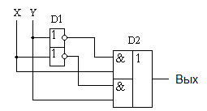
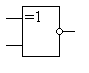
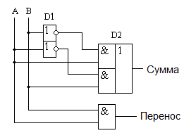
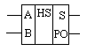
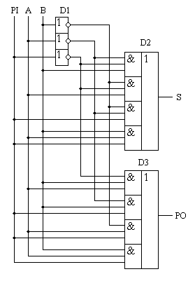
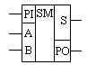
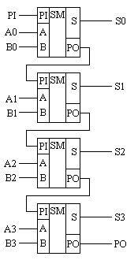
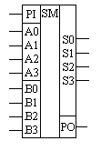

Сумматоры
Построение двоичных сумматоров обычно начинается с сумматора по модулю 2. В таблице 1 приведена таблица истинности этого сумматора. Ее можно получить исходя из правил суммирования в двоичной арифметике.
Таблица 1
| X | Y | Выход |
|---|---|---|
| 0 | 0 | 0 |
| 0 | 1 | 1 |
| 1 | 0 | 1 |
| 1 | 1 | 0 |
В соответствии с таблицы истинности получим схему сумматора по модулю 2 (рис. 1).

Рис. 1 - Принципиальная схема, реализующая таблицу истинности сумматора по модулю 2.
Сумматор по модулю 2 (для двоичной арифметики его схема совпадает со схемой исключающего "ИЛИ") изображается на схемах как показано на рисунке 3.

Рис. 2 - Условное графическое обозначение сумматора по модулю 2
Сумматор по модулю 2 выполняет суммирование без учета переноса. В полном двоичном сумматоре требуется учитывать перенос, поэтому требуются схемы, позволяющие формировать перенос в следующий двоичный разряд. Таблица истинности такой схемы, называемой полусумматором, приведена в таблице 2.
Таблица 2
| X | Y | Сумма | Перенос |
|---|---|---|---|
| 0 | 0 | 0 | 0 |
| 0 | 1 | 1 | 0 |
| 1 | 0 | 1 | 0 |
| 1 | 1 | 0 | 1 |
В соответствии с принципами построения произвольной таблицы истинности получим схему полусумматора. Эта схема приведена на рисунке 5.

Рис. 3 - Принципиальная схема, реализующая таблицу истинности полусумматора.
Полусумматор изображается на схемах как показано на рисунке 6.

Рис. 4 - Условное графическое обозначение полусумматора
Схема полусумматора формирует перенос в следующий разряд, но не может учитывать перенос из предыдущего разряда, поэтому она и называется полусумматором. Таблицу истинности полного двоичного одноразрядного сумматора можно получить из правил суммирования двоичных чисел. Она приведена в таблице 3. В обозначении входов использовано следующее правило: в качестве входов использованы одноразрядные числа A и B; перенос обозначен буквой P; для обозначения входа переноса используется буква I (сокращение от английского слова input – вход); для обозначения выхода переноса используется буква O (сокращение от английского слова output – выход).
Таблица 3
| PI | A | B | S | PO |
|---|---|---|---|---|
| 0 | 0 | 0 | 0 | 0 |
| 0 | 0 | 1 | 1 | 0 |
| 0 | 1 | 0 | 1 | 0 |
| 0 | 1 | 1 | 0 | 1 |
| 1 | 0 | 0 | 1 | 0 |
| 1 | 0 | 1 | 0 | 1 |
| 1 | 1 | 0 | 0 | 1 |
| 1 | 1 | 1 | 1 | 1 |
В соответствии с принципами построения принципиальной схемы по произвольной таблице истинности получим схему полного двоичного одноразрядного сумматора (рис. 5). Ее можно минимизировать, но это несколько усложняет принципы построения сумматоров.

Рис. 5 - Принципиальная схема, реализующая таблицу истинности полного двоичного одноразрядного сумматора.
Полный двоичный одноразрядный сумматор изображается на схемах как показано на рисунке 9.

Рис. 6 - Условное графическое обозначение полного двоичного одноразрядного сумматора
Для того чтобы получить многоразрядный сумматор, достаточно соединить входы и выходы переносов соответствующих двоичных разрядов. Схема соединения одноразрядных сумматоров для реализации четырехразрядного сумматора приведена на рисунке 7.

Рис. 7 - Принципиальная схема многоразрядного двоичного сумматора.
Одноразрядные сумматоры практически никогда не использовались, так как почти сразу же были выпущены микросхемы многоразрядных сумматоров. Полный двоичный четырехразрядный сумматор изображается на схемах как показано на рисунке 8.

Рис. 8 - Изображение полного двоичного многоразрядного сумматора на схемах.
Естественно, в приведенной на рисунке 7 схеме рассматриваются только принципы работы двоичных сумматоров. В реальных схемах никогда не допускают последовательного распространения переноса через все разряды многоразрядного сумматора. Для увеличения скорости работы двоичного сумматора применяется отдельная схема формирования переносов для каждого двоичного разряда. Таблицу истинности для такой схемы легко получить из алгоритма суммирования двоичных чисел, а затем применить хорошо известные нам принципы построения цифровой схемы по произвольной таблице истинности.
Источники
pue8.ru - Сумматоры и цифровые компараторы: принцип работы, схемы